Input Data Format
This files provides the data for a 9-Bus power system and describes the data format. All programs use the same input data format as the data format used in Power System Toolbox (PST) by Prof. Chow at RPI. However, this file only describes the data we used.
The original filename for this file in PST is data3m9b.m.
The 9-bus system is also described in chapter 2 of Power System Control and Stability by P. M. Anderson and A. A. Fouad.
Three matrices are used to describe a power system, namely bus data, line data and machine/generator data.
Contents
Bus Data Format
Bus data describe each bus in the system, and the specify the load flow data for each bus. Each row describes a bus in the system. Each column is defined as follows:
- Column 1: Bus number (identifier)
- Column 2: Bus voltage magnitude (pu)
- Column 3: Bus voltage angle (degree)
- Column 4: Generator output active power (pu)
- Column 5: Generator output reactive power (pu)
- Column 6: Load active power (pu)
- Column 7: Load reactive power (pu)
- Column 8: G shunt (NOT USED)
- Column 9: B shunt (NOT USED)
- Column 10:Bus type (1 = swing bus; 2 = PV bus; 3 = PQ bus)
The bus data for the 9-bus system is as follows:
bus = [...
1 1.04 0.00 0.716 0.27 0.00 0.00 0.00 0.00 1;
2 1.025 9.3 1.63 0.067 0.00 0.00 0.00 0.00 2;
3 1.025 4.7 0.85 -0.109 0.00 0.00 0.00 0.00 2;
4 1.026 -2.2 0.00 0.00 0.00 0.00 0.00 0.00 3;
5 0.996 -4.0 0.00 0.00 1.25 0.5 0.00 0.00 3;
6 1.013 -3.7 0.00 0.00 0.90 0.3 0.00 0.00 3;
7 1.026 3.7 0.00 0.00 0.00 0.00 0.00 0.00 3;
8 1.016 0.7 0.00 0.00 1.00 0.35 0.00 0.00 3;
9 1.032 2.0 0.00 0.00 0.00 0.00 0.00 0.00 3;
];
Line Data Format
Line data describe the transmission lines in the system. Each row describe a line in the system. Each column is defined as follows:
- Column 1: From bus (the bus from which the line is connected)
- Column 2: To bus (the bus to which the line is connected)
- Column 3: Total line resistance, R (pu)
- Column 4: Total line reactance X (pu)
- Column 5: Total line charging B (pu)
- Column 6: Tap ratio (NOT USED)
- Column 7: NOT USED
The line data for the 9-bus system is as follows:
line = [...
1 4 0.00 0.0576 0.0 1. 0. ;
2 7 0.00 0.0625 0.0 1. 0. ;
3 9 0.00 0.0586 0.0 1. 0. ;
4 5 0.010 0.085 0.176 1. 0. ;
5 7 0.032 0.161 0.306 1. 0. ;
4 6 0.017 0.092 0.158 1. 0. ;
6 9 0.039 0.170 0.358 1. 0. ;
7 8 0.0085 0.072 0.149 1. 0. ;
8 9 0.0119 0.1008 0.209 1. 0. ;
];
Machine Data Format
Machine data describe the generator specifications in the sytem. Each row describe a machine/generator in the system. Each column is defined as follows:
- Column 1: Machine number
- Column 2: Bus number, to which the generator is connected
- Column 3: Base MVA (NOT USED)
- Column 4: Leakage reactance 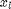(pu) (NOT USED)
- Column 5: Resistance 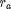(pu) (NOT USED)
- Column 6: d-axis sychronous reactance 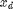(pu) (NOT USED)
- Column 7. d-axis transient reactance 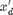(pu)
- Column 8. d-axis subtransient reactance 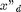(pu) (NOT USED)
- Column 9. d-axis open-circuit time constant 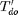(sec) (NOT USED)
- Column 10. d-axis open-circuit subtransient time constant 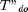(sec) (NOT USED)
- Column 11. q-axis sychronous reactance 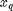(pu) (NOT USED)
- Column 12. q-axis transient reactance 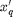(pu) (NOT USED)
- Column 13. q-axis subtransient reactance 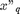(pu) (NOT USED)
- Column 14. q-axis open-circuit time constant 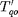(sec) (NOT USED)
- Column 15. q-axis open circuit subtransient time constant 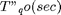 (NOT USED)
- Column 16. inertia constant 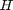(sec) (NOT USED)
- Column 17. damping coefficient 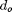(pu) (NOT USED)
- Column 18. dampling coefficient 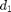(pu) (NOT USED)
- Column 19. Bus number (NOT USED)
The line data for the 9-bus system is as follows (Note that all the generators use classical model)
mac_con = [ ...
1 1 100 0.000 0.000 0. 0.0608 0 0 0 0 0 0 0 0 23.64 9.6 0 1;
2 2 100 0.000 0.000 0. 0.1198 0 0 0 0 0 0 0 0 6.4 2.5 0 2;
3 3 100 0.000 0.000 0. 0.1813 0 0 0 0 0 0 0 0 3.01 1.0 0 3];
Remarks
The use of "line" as variable may cause unexpected problem since it is also a function of MATLAB. It is recommended that the "line" matrix to be renamed after loading the file.